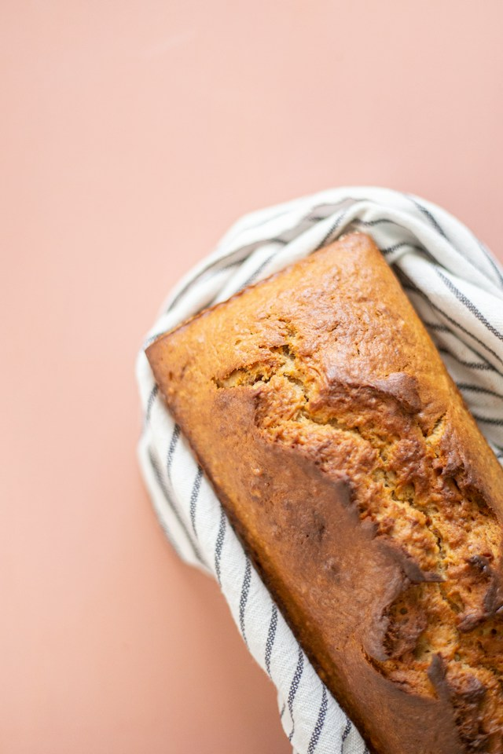

Home
Zucchini Bread

Description
Zucchini bread is an easy-to-make tasty treat that will always yield a moist and sweet bread.
Ingredients
Dry Ingredients
- 2 cups all-purpose flour
- 1 1/2 tsp baking powder
- 1/2 tsp baking soda
- 1 tsp coarse salt (1/2 tsp if using fine salt)
- 1 1/3 cup light brown sugar (packed)
- 1 1/2 tsp ground cinnamon
- 2 cups (305 g) zucchini
Wet Ingredients
- 2 large eggs
- 1/2 cup cooking oil
- 1/2 cup milk
- 1 1/2 tsp vanilla extract
Steps
- Except for the grated zucchini, place dry ingredients into a single bowl. Stir until mostly homogeneous.
- Add zucchini to dry ingredients. Stir again until mostly homogeneous.
- In a new bowl, mix all wet ingredients until mostly homogeneous.
- Combine both wet and dry ingredients. Stir until mostly homogeneous.
- Place mix into 8x4x2 loaf pan.
- Bake mix @ 350F / 176C for 55 to 60 minutes.
- Make sure bread is fully cook by inserting and removing a toothpick in the middle of the bread and checking the toothpick
comes back clean.
- Enjoy!